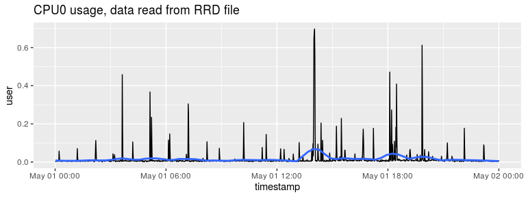

The rrd package allows you to read data from an RRD Round Robin Database.
Installation
System requirements
In order to build the package from source you need librrd. Installing RRDtool from your package manager will usually also install the library.
| Platform | Installation | Reference |
|---|---|---|
| Debian / Ubuntu | apt-get install librrd-dev |
|
| RHEL / CentOS | yum install rrdtool-devel |
|
| Fedora | yum install rrdtool-devel |
https://apps.fedoraproject.org/packages/rrdtool-devel |
| Solaris / CSW | Install rrdtool
|
https://www.opencsw.org/packages/rrdtool/ |
| OSX | brew install rrdtool |
|
| Windows | Not available |
Note: on OSX you may have to update xcode, using xcode-select --install.
Package installation
You can install the stable version of the package from CRAN:
And the development version from GitHub:
About RRD and RRDtool
The rrd package is a wrapper around RRDtool. Internally it uses librrd to import the binary data directly into R without exporting it to an intermediate format first.
For an introduction to RRD database, see https://oss.oetiker.ch/rrdtool/tut/rrd-beginners.en.html
Example
The package contains some example RRD files that originated in an instance of RStudio Connect. In this example, you analyse CPU data in the file cpu-0.rrd.
Load the package and assign the location of the cpu-0.rrd file to a variable:
To describe the contents of an RRD file, use describe_rrd():
describe_rrd(rrd_cpu_0)
#> An RRD file with 10 RRA arrays and step size 60
#> [1] AVERAGE_60 (43200 rows)
#> [2] AVERAGE_300 (25920 rows)
#> [3] MIN_300 (25920 rows)
#> [4] MAX_300 (25920 rows)
#> [5] AVERAGE_3600 (8760 rows)
#> [6] MIN_3600 (8760 rows)
#> [7] MAX_3600 (8760 rows)
#> [8] AVERAGE_86400 (1825 rows)
#> [9] MIN_86400 (1825 rows)
#> [10] MAX_86400 (1825 rows)To read an entire RRD file, i.e. all of the RRA archives, use read_rrd(). This returns a list of tibble objects:
cpu <- read_rrd(rrd_cpu_0)
str(cpu, max.level = 1)
#> List of 10
#> $ AVERAGE60 :Classes 'tbl_df', 'tbl' and 'data.frame': 43199 obs. of 9 variables:
#> $ AVERAGE300 :Classes 'tbl_df', 'tbl' and 'data.frame': 25919 obs. of 9 variables:
#> $ MIN300 :Classes 'tbl_df', 'tbl' and 'data.frame': 25919 obs. of 9 variables:
#> $ MAX300 :Classes 'tbl_df', 'tbl' and 'data.frame': 25919 obs. of 9 variables:
#> $ AVERAGE3600 :Classes 'tbl_df', 'tbl' and 'data.frame': 8759 obs. of 9 variables:
#> $ MIN3600 :Classes 'tbl_df', 'tbl' and 'data.frame': 8759 obs. of 9 variables:
#> $ MAX3600 :Classes 'tbl_df', 'tbl' and 'data.frame': 8759 obs. of 9 variables:
#> $ AVERAGE86400:Classes 'tbl_df', 'tbl' and 'data.frame': 1824 obs. of 9 variables:
#> $ MIN86400 :Classes 'tbl_df', 'tbl' and 'data.frame': 1824 obs. of 9 variables:
#> $ MAX86400 :Classes 'tbl_df', 'tbl' and 'data.frame': 1824 obs. of 9 variables:Since the resulting object is a list of tibbles, you can easily work with individual data frames:
names(cpu)
#> [1] "AVERAGE60" "AVERAGE300" "MIN300" "MAX300"
#> [5] "AVERAGE3600" "MIN3600" "MAX3600" "AVERAGE86400"
#> [9] "MIN86400" "MAX86400"
cpu[[1]]
#> # A tibble: 43,199 x 9
#> timestamp user sys nice idle wait irq softirq
#> <dttm> <dbl> <dbl> <dbl> <dbl> <dbl> <dbl> <dbl>
#> 1 2018-04-02 12:24:00 0.0104 0.00811 0 0.981 0 0 0
#> 2 2018-04-02 12:25:00 0.0126 0.00630 0 0.979 0 0 0
#> 3 2018-04-02 12:26:00 0.0159 0.00808 0 0.976 0 0 0
#> 4 2018-04-02 12:27:00 0.00853 0.00647 0 0.985 0 0 0
#> 5 2018-04-02 12:28:00 0.0122 0.00999 0 0.978 0 0 0
#> 6 2018-04-02 12:29:00 0.0106 0.00604 0 0.983 0 0 0
#> 7 2018-04-02 12:30:00 0.0147 0.00427 0 0.981 0 0 0
#> 8 2018-04-02 12:31:00 0.0193 0.00767 0 0.971 0 0 0
#> 9 2018-04-02 12:32:00 0.0300 0.0274 0 0.943 0 0 0
#> 10 2018-04-02 12:33:00 0.0162 0.00617 0 0.978 0 0 0
#> # … with 43,189 more rows, and 1 more variable: stolen <dbl>
tail(cpu$AVERAGE60$sys)
#> [1] 0.0014390667 0.0020080000 0.0005689333 0.0000000000 0.0014390667
#> [6] 0.0005689333To read a single RRA archive from an RRD file, use read_rra(). To use this function, you must specify several arguments that define the specific data to retrieve. This includes the consolidation function (e.g. “AVERAGE”) and time step (e.g. 60), the end time. You must also specifiy either the start time, or the number of steps, n_steps.
In this example, you extract the average for 1 minute periods (step = 60), for one entire day (n_steps = 24 * 60):
end_time <- as.POSIXct("2018-05-02") # timestamp with data in example
avg_60 <- read_rra(rrd_cpu_0, cf = "AVERAGE", step = 60, n_steps = 24 * 60,
end = end_time)
avg_60
#> # A tibble: 1,440 x 9
#> timestamp user sys nice idle wait irq softirq
#> <dttm> <dbl> <dbl> <dbl> <dbl> <dbl> <dbl> <dbl>
#> 1 2018-05-01 00:01:00 0.00458 2.01e-3 0 0.992 0. 0 0
#> 2 2018-05-01 00:02:00 0.00258 5.70e-4 0 0.996 0. 0 0
#> 3 2018-05-01 00:03:00 0.00633 1.44e-3 0 0.992 0. 0 0
#> 4 2018-05-01 00:04:00 0.00515 2.01e-3 0 0.991 0. 0 0
#> 5 2018-05-01 00:05:00 0.00402 5.69e-4 0 0.995 0. 0 0
#> 6 2018-05-01 00:06:00 0.00689 1.44e-3 0 0.992 0. 0 0
#> 7 2018-05-01 00:07:00 0.00371 2.01e-3 0 0.993 1.44e-3 0 0
#> 8 2018-05-01 00:08:00 0.00488 2.01e-3 0 0.993 5.69e-4 0 0
#> 9 2018-05-01 00:09:00 0.00748 5.68e-4 0 0.992 0. 0 0
#> 10 2018-05-01 00:10:00 0.00516 0. 0 0.995 0. 0 0
#> # … with 1,430 more rows, and 1 more variable: stolen <dbl>And you can easily plot using your favourite packages:
library(ggplot2)
ggplot(avg_60, aes(x = timestamp, y = user)) +
geom_line() +
stat_smooth(method = "loess", span = 0.125, se = FALSE) +
ggtitle("CPU0 usage, data read from RRD file")
More information
For more information on rrdtool and the rrd format please refer to the official rrdtool documentation and tutorials.
You can also read a more in-depth description of the package in an R Views blog post Reading and analysing log files in the RRD database format.